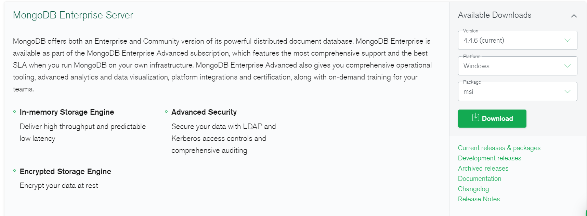
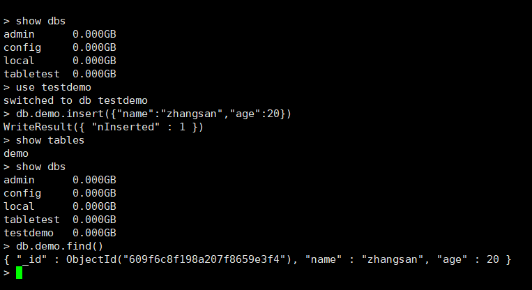
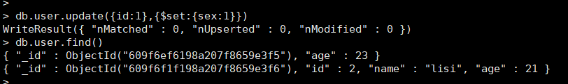
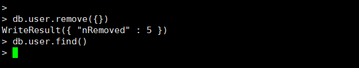
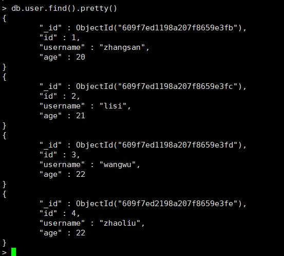
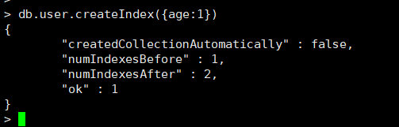

MongoDB学习（2）
MongoDB学习
1.如何安装MongoDB
MongoDB提供了可用于32位和64位系统的预编译二进制包，你可以从MongoDB官网下载安装，MongoDB预编译二进制包下载地址：https://www.mongodb.com/try/download/enterprise
根据你的系统平台下载文件，根据平台不同进行安装即可。

使用docker安装mongoDB
#拉取mongo4.0.3镜像
docker pull mongo:4.0.3
#创建名字为mongodb的容器，容器端口27017映射主机端口27017，容器存储路径/data/db映射主机存储路径/data/mongodb
docker create --name mongodb -p 27017:27017 -v /data/mongodb:/data/db mongo:4.0.3
#启动容器
docker start mongodb
#进入容器
docker exec -it mongodb /bin/bash
#使用MongoDB客户端进行操作
mongo
show dbs #查询所有的数据库

2.Mongo基本操作
2.1.数据库以及表的操作
2.1.1.查看所有数据库
show dbs
2.1.2.通过use来切换数据库
use testdemo
2.1.3.创建数据库
在MongoDB中，数据库是自动创建的，通过use切换到新数据库中，进行插入数据即可自动创建数据库
db.user.insert({"name":"zhangsan","age":20'})

2.1.4.查看表
show tables
2.1.5.删除表
db.demo.drop()
如果成功删除选定集合，则 drop() 方法返回 true，否则返回 false。
2.1.6删除数据库
use demo #先切换到要删除的数据库
db.dropDatabase() #删除数据库
2.1.7新增数据
语法：db.COLLECTION_NAME.insert(document)
document文档存储的结构类似于JSON结构的一种结构，BSON（Binary JSON）

2.1.8更新数据
语法：
db.collection.update(
,
,
[
upsert:,
multi:,
writeConcern:
]
)参数说明：
query : update的查询条件，类似sql update查询内where后面的。
update : update的对象和一些更新的操作符（如 inc…）等，也可以理解为sql update查询内set后面的
upsert : 可选，这个参数的意思是，如果不存在update的记录，是否插入objNew,true为插入，默认是
false，不插入。
multi : 可选，mongodb 默认是false,只更新找到的第一条记录，如果这个参数为true,就把按条件查出来多条
记录全部更新。
writeConcern :可选，抛出异常的级别。

不带更新的操作符会删除掉其他不更新的字段

更新不存在的字段时，会添加该字段

更新不存在的数据时，默认是不插入数据的

如果设置第一个参数upsert为true，则会新增数据

2.1.9删除数据
语法：
db.collection.remove(
,
{
justOne:,
writeConcern:
}
)参数说明：
query :（可选）删除的文档的条件。
justOne : （可选）如果设为 true 或 1，则只删除一个文档，如果不设置该参数，或使用默认值 false，则删
除所有匹配条件的文档。
writeConcern :（可选）抛出异常的级别


删除所有数据

#说明：为了简化操作，官方推荐使用deleteOne()与deleteMany()进行删除数据操作。
db.user.deleteOne({id:1}) #删除一条数据
db.user.deleteMany({}) #删除所有数据
2.1.10查询数据
语法：
db.user.find([query],[fields])
参数说明：
query ：可选，使用查询操作符指定查询条件
fields ：可选，使用投影操作符指定返回的键。查询时返回文档中所有键值， 只需省略该参数即可（默认省
略）。
如果你需要以易读的方式来读取数据，可以使用 pretty() 方法

| 操作 | 格式 | 范例 | RDBMS中的类似语句 |
|---|---|---|---|
| 等于 | { |
db.user.find({age:22}).pretty() | where age = 22 |
| 小于 | { |
db.user.find({age:{$lt:21}}) | where age < 21 |
| 小于等于 | { |
db.user.find({age:{$lte:21}}) | where age <= 21 |
| 大于 | { |
db.user.find({age:{$gt:21}}) | where age > 21 |
| 大于等于 | { |
db.user.find({age:{$gte:21}}) | where age >= 21 |
| 不等于 | { |
db.user.find({age:{$ne:21}}) | where age != 21 |
2.2索引
索引通常能够极大的提高查询的效率，如果没有索引，MongoDB在读取数据时必须扫描集合中的每个文件并选取
那些符合查询条件的记录。
这种扫描全集合的查询效率是非常低的，特别在处理大量的数据时，查询可以要花费几十秒甚至几分钟，这对网站
的性能是非常致命的。
索引是特殊的数据结构，索引存储在一个易于遍历读取的数据集合中，索引是对数据库表中一列或多列的值进行排
序的一种结构
2.2.1查看索引
> db.user.getIndexes()
[
{
"v" : 2,
"key" : {
"_id" : 1
},
"name" : "_id_",
"ns" : "user.user"
}
]
#说明：1表示升序创建索引，-1表示降序创建索引。
查看索引大小，单位：字节db.user.totalIndexSize()
2.2.2创建索引


创建联合索引
db.user.createIndex({'age':1, 'id':-1})
2.2.3删除索引
db.user.dropIndex("age_1")
或者删除除了_id的索引
db.user.dropIndexes()
2.3执行计划
MongoDB 查询分析可以确保我们建议的索引是否有效，是查询语句性能分析的重要工具。
#查看执行计划
> db.testIndex.find({age:{$gt:100},id:{$lt:200}}).explain()
{
"queryPlanner" : {
"plannerVersion" : 1,
"namespace" : "testIndex.testIndex",
"indexFilterSet" : false,
"parsedQuery" : {
"$and" : [
{
"id" : {
"$lt" : 200
}
},
{
"age" : {
"$gt" : 100
}
}
]
},
"winningPlan" : { #最佳执行计划
"stage" : "FETCH", #查询方式，常见的有COLLSCAN/全表扫描、IXSCAN/索引扫描、FETCH/根据索引去检索文档、SHARD_MERGE/合并分片结果、IDHACK/针对_id进行查询
"filter" : {
"id" : {
"$lt" : 200
}
},
"inputStage" : {
"stage" : "IXSCAN",
"keyPattern" : {
"age" : 1,
"username" : -1
},
"indexName" : "age_1_username_-1",
"isMultiKey" : false,
"multiKeyPaths" : {
"age" : [ ],
"username" : [ ]
},
"isUnique" : false,
"isSparse" : false,
"isPartial" : false,
"indexVersion" : 2,
"direction" : "forward",
"indexBounds" : {
"age" : [
"(100.0, inf.0]"
],
"username" : [
"[MaxKey, MinKey]"
]
}
}
},
"rejectedPlans" : [ ]
},
"serverInfo" : {
"host" : "9e840090d799",
"port" : 27017,
"version" : "4.0.3",
"gitVersion" : "7ea530946fa7880364d88c8d8b6026bbc9ffa48c"
},
"ok" : 1
}
3.通过JavaApi操作MongoDB
3.1编写CRUD操作
demo中演示了，如何连接到MongoDB，如何选择数据库、表，进行查询的操作。
引入驱动
<dependency>
<groupId>org.mongodb</groupId>
<artifactId>mongodb-driver-sync</artifactId>
<version>3.9.1</version>
</dependency>
@Slf4j
public class TestCRUD {
private MongoCollection<Document> user;
/**
* 初始化user集合
*/
@Before
public void init(){
// 创建一个客户端-建立连接
MongoClient mongoClient = MongoClients.create("mongodb://192.168.111.128:27017");
// 选择数据库
MongoDatabase tabletest = mongoClient.getDatabase("tabletest");
// 选择集合（表）
user = tabletest.getCollection("user");
}
@Test
public void testFind(){
user.find(
// age > 50 && age < 100
and(
lte("age", 100),
gte("age", 50)
)
)
// 按 id 降序
.sort(Sorts.descending("id"))
// 过滤
.projection(
Projections.fields(
// 仅输出 id和age 字段
Projections.include("id", "age"),
// 不输出 _id
Projections.excludeId()
)
)
// 循环每一行
.forEach((Consumer<? super Document>) item->{
System.out.println(item);
});
}
@Test
public void testInsert() {
// 插入对象
Document document = new Document("id", "10001")
.append("age", 100)
.append("name", "10001号人")
.append("email", "789@qq.com");
// 插入数据
user.insertOne(document);
log.info("插入成功");
// 验证
user.find(eq("name", "10001号人")).forEach((Consumer<? super Document>) item->{
log.info(item.toJson());
});
}
@Test
public void testUpdate() {
// 更新
UpdateResult updateResult = user.updateOne(eq("id", "10001"), Updates.set("age", 200));
log.info(String.valueOf(updateResult));
// 验证
user.find(eq("name", "10001号人")).forEach((Consumer<? super Document>) item->{
log.info(item.toJson());
});
}
@Test
public void testDelete() {
// 删除
DeleteResult id = user.deleteOne(eq("id", "10001"));
log.info(String.valueOf(id));
}
}
3.2面向对象操作
@Data
@AllArgsConstructor
@NoArgsConstructor
@Builder
public class User {
private String id;
@Field(value = "username")
private String name;
private Integer age;
}
public class TestObject {
MongoCollection<User> userCollection;
@Before
public void init() {
//定义对象的解码注册器
CodecRegistry pojoCodecRegistry = CodecRegistries.
fromRegistries(MongoClientSettings.getDefaultCodecRegistry(),
CodecRegistries.fromProviders(PojoCodecProvider.builder().automatic(true).build())
);
// 建立连接
MongoClient mongoClient =
MongoClients.create("mongodb://192.168.111.128:27017");
// 选择数据库 并且 注册解码器
MongoDatabase mongoDatabase = mongoClient.getDatabase("tabletest1")
.withCodecRegistry(pojoCodecRegistry);
// 选择表
this.userCollection = mongoDatabase
.getCollection("user", User.class);
}
@Test
public void testInsert() {
for (int i = 0; i < 100; i++) {
User user = new User("id111_" + i, "name111_" + i, i + 10);
userCollection.insertOne(user);
}
}
@Test
public void testQuery() {
User user = new User();
user.setId("id_1");
userCollection.find(Filters.eq("username", "name_1")).forEach((Consumer<? super User>) item -> {
System.out.println(item);
});
}
@Test
public void testUpdate() {
UpdateResult updateResult =
userCollection.updateMany(Filters.eq("username", "name_1"), Updates.set("age", 22));
System.out.println(updateResult);
}
@Test
public void testDelete() {
DeleteResult deleteResult =
this.userCollection.deleteOne(Filters.eq("name", "张三"));
System.out.println(deleteResult);
}
}
3.3SpringBoot 整合 MongoDB
3.3.1引入依赖
<parent>
<groupId>org.springframework.boot</groupId>
<artifactId>spring-boot-starter-parent</artifactId>
<version>2.1.0.RELEASE</version>
</parent>
<dependency>
<groupId>org.springframework.boot</groupId>
<artifactId>spring-boot-starter-data-mongodb</artifactId>
</dependency>
<dependency>
<groupId>org.springframework.boot</groupId>
<artifactId>spring-boot-starter-test</artifactId>
<scope>test</scope>
</dependency>
3.3.2编写applicaition.properties文件
spring.data.mongodb.uri=mongodb://192.168.111.128:27017/tabletest1
3.3.3编写Dao层
@Repository
public class UserMongoDao {
@Autowired
private MongoTemplate mongoTemplate;
/**
* 插入
* @param user
*/
public void save(User user) {
mongoTemplate.save(user);
}
/**
* 通过名称查询
* @param name
* @return
*/
public List<User> queryUserListByName(String name) {
Query query = Query.query(Criteria.where("name").is(name));
List<User> users = mongoTemplate.find(query, User.class);
return users;
}
/**
* 分页查询
* @param pageSize
* @param pageNum
* @return
*/
public List<User> queryUserList(int pageSize, int pageNum){
Query query = new Query().limit(pageSize).skip((pageNum - 1) * pageSize);
List<User> users = mongoTemplate.find(query, User.class);
return users;
}
/**
* 更新
* @param user
* @return
*/
public UpdateResult updateUser(User user) {
Query id = Query.query(Criteria.where("id").is(user.getId()));
Update age = Update.update("age", user.getAge());
UpdateResult updateResult = mongoTemplate.updateFirst(id, age, User.class);
return updateResult;
}
/**
* 删除
* @param user
* @return
*/
public DeleteResult deleteUser(User user){
Query query = Query.query(Criteria.where("id").is(user.getId()));
DeleteResult remove = mongoTemplate.remove(query, User.class);
return remove;
}
}
3.3.4编写启动类
@SpringBootApplication
public class MongoApplication {
public static void main(String[] args) {
SpringApplication.run(MongoApplication.class, args);
}
}
3.3.5编写单元测试
@SpringBootTest
@RunWith(SpringRunner.class)
public class TestDemo {
@Autowired
private UserMongoDao userMongoDao;
@Test
public void testSave(){
for (int i = 0; i < 100; i++) {
User user = new User("id_" + i, "name_" + i, i + 10);
userMongoDao.save(user);
}
}
@Test
public void testFind(){
userMongoDao.queryUserListByName("name_1").forEach(item->{
System.out.println(item);
});
}
@Test
public void testFindPage(){
userMongoDao.queryUserList(2, 5).forEach(item->{
System.out.println(item);
});
}
@Test
public void testInsert() {
User user = User.builder().username("hahah").id("777").age(100).build();
userMongoDao.save(user);
userMongoDao.queryUserListByName("hahah").forEach(item->{
System.out.println(item);
});
}
@Test
public void testDelete() {
User user = User.builder().id("777").build();
userMongoDao.deleteUser(user);
userMongoDao.queryUserListByName("hahah").forEach(item->{
System.out.println(item);
});
}
}